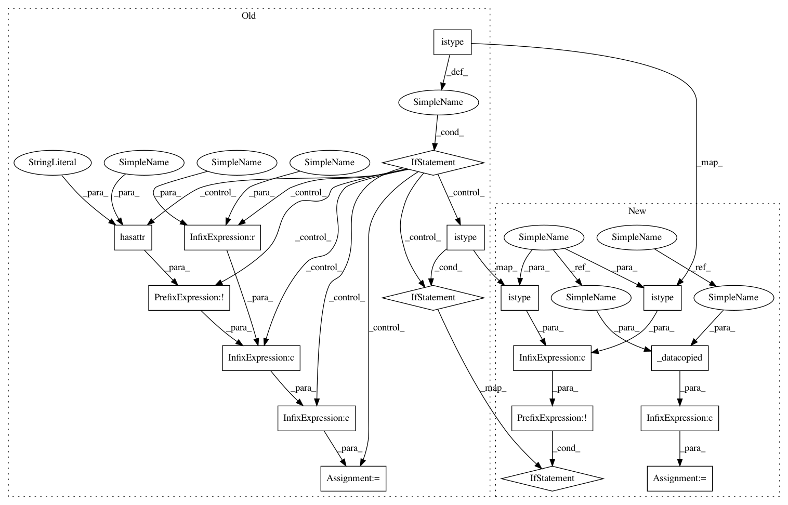

579b13fba36d3010edcb9d590c0095e86fa36f5a,scipy/fftpack/basic.py,,_raw_fftn_dispatch,#Any#Any#Any#Any#Any#,451
Before Change
except KeyError:
raise ValueError("type %s is not supported" % tmp.dtype)
if istype(tmp, numpy.complex128):
overwrite_x = overwrite_x or (tmp is not x and not \
hasattr(x,"__array__"))
elif istype(tmp, numpy.complex64):
pass
else:
overwrite_x = 1
return _raw_fftnd(tmp,shape,axes,direction,overwrite_x,work_function)
def ifftn(x, shape=None, axes=None, overwrite_x=0):
After Change
return _raw_fftn_dispatch(x, shape, axes, overwrite_x, 1)
def _raw_fftn_dispatch(x, shape, axes, overwrite_x, direction):
tmp = _asfarray(x)
try:
work_function = _DTYPE_TO_FFTN[tmp.dtype]
except KeyError:
raise ValueError("type %s is not supported" % tmp.dtype)
if not (istype(tmp, numpy.complex64) or istype(tmp, numpy.complex128)):
overwrite_x = 1
overwrite_x = overwrite_x or _datacopied(tmp, x)
return _raw_fftnd(tmp,shape,axes,direction,overwrite_x,work_function)
def ifftn(x, shape=None, axes=None, overwrite_x=0):
In pattern: SUPERPATTERN
Frequency: 3
Non-data size: 18
Instances
Project Name: scipy/scipy
Commit Name: 579b13fba36d3010edcb9d590c0095e86fa36f5a
Time: 2011-01-31
Author: pav@iki.fi
File Name: scipy/fftpack/basic.py
Class Name:
Method Name: _raw_fftn_dispatch
Project Name: scipy/scipy
Commit Name: 579b13fba36d3010edcb9d590c0095e86fa36f5a
Time: 2011-01-31
Author: pav@iki.fi
File Name: scipy/fftpack/basic.py
Class Name:
Method Name: _raw_fftn_dispatch
Project Name: scipy/scipy
Commit Name: 579b13fba36d3010edcb9d590c0095e86fa36f5a
Time: 2011-01-31
Author: pav@iki.fi
File Name: scipy/fftpack/basic.py
Class Name:
Method Name: ifft
Project Name: scipy/scipy
Commit Name: 579b13fba36d3010edcb9d590c0095e86fa36f5a
Time: 2011-01-31
Author: pav@iki.fi
File Name: scipy/fftpack/basic.py
Class Name:
Method Name: fft